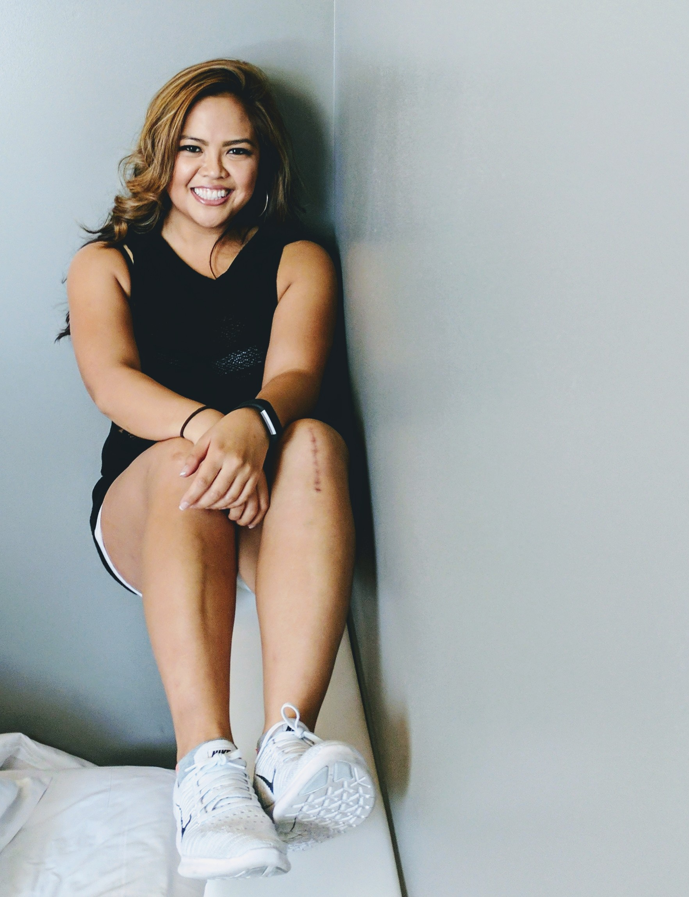
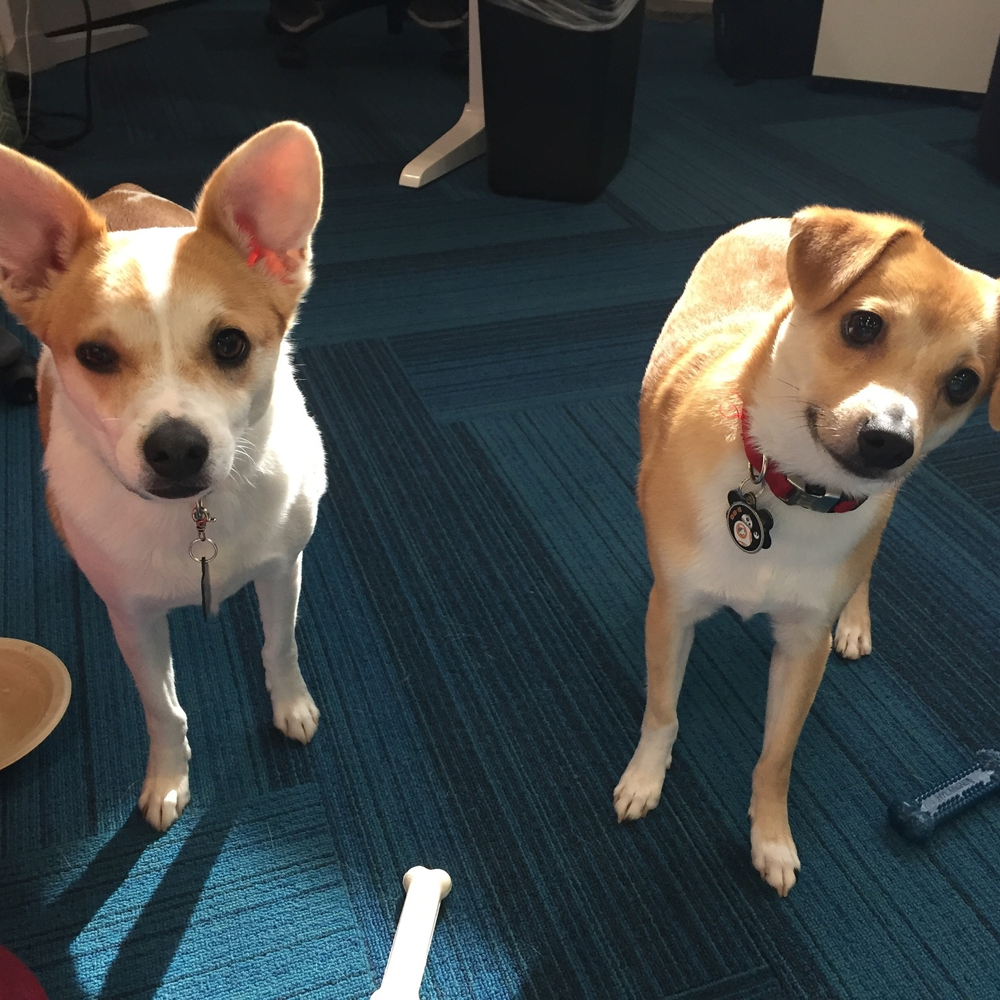

About Me

I was born and raised in Northern California until I turned 18 and moved to Los Angeles to attend UCLA. I have to admit that I had a brief stint as a USC Trojan, but believe me when I say I am a UCLA Bruin for life!
While I was in gradudate school, I started working full-time at Fox Sports in music licensing and clearances. But before I hit my two year mark, I was off to my next adventure. I love music and I love sports -- but I realized I didn't love doing contracts. By some luck, effort, and fate, I wound up with a non-tech job at Google, where I've been working on the business and content side of YouTube for the past six and a half years.
My interests include basketball, fantasy football, video games, and hip hop and R&B music. But I’m also into makeup, fashion, arts & crafts, shoes, and shopping.
Finding free time outside of work and a regular workout schedule is difficult, but I try to use it to grow, learn, and develop new skills to keep my mind engaged and my life fulfilled. This is exactly what has led me to explore the world of coding and web development. I'm currently taking part-time coding classes and I'm excited for doors I'll open up for myself once I've learned and mastered the basics!
Oh, and I have two furry "kids" -- pictured below.

Rocko (left) and Miles (right)